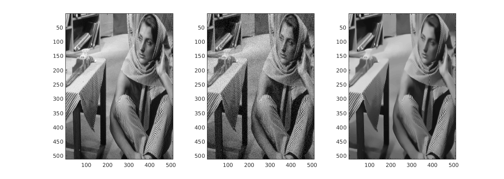
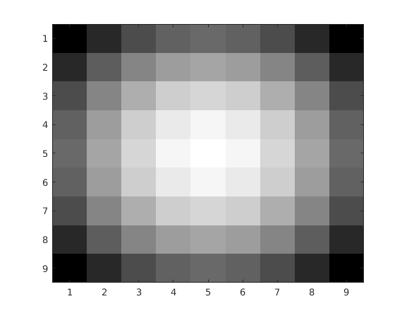

Q3. Patch-based Filtering
Dhruv Ilesh Shah, Bhavesh Thakkar and Dhanvi Sreenivasan
Contents
myPatchBasedFiltering.m
function im_new = myPatchBasedFiltering(img, h, patchSize, windowSize) % This function implements the patch-based filter for a given input image, % with the gaussian kernel function defined by h and patchSize, windowSize % as given by the arguments. %patchSize = 9; %windowSize = 25; p = (patchSize - 1) / 2; w = (windowSize - 1) / 2; % std = 40; % Standard deviation of the kernel dim = size(img, 1); % 1:1 Aspect ratio assumed im_new = img; isotropy_h = 5; patch_isotropy = fspecial('gaussian', [patchSize, patchSize], isotropy_h); for pi = p+1:dim-p disp(pi) for pj = p+1:dim-p % Iterate over each pixel % Window limits also set by the same parameters as we want a fixed % dimensional parameter space. wmin = max([p+1, p+1], [pi-w, pj-w]); wmax = min([dim-p, dim-p], [pi+w, pj+w]); patch_p = img(pi-p:pi+p, pj-p:pj+p); patch_weights = zeros([windowSize^2, 1]); % Store the patch weights in order patch_centers = zeros([windowSize^2, 1]); count = 0; for qi = wmin(1):wmax(1) for qj = wmin(2):wmax(2) count = count + 1; % This gives a neighboring pixel in the same window patch_q = img(qi-p:qi+p, qj-p:qj+p); patch_centers(count) = img(qi, qj); patch_weights(count) = exp(-1 * sum(sum((patch_isotropy.*(patch_p - patch_q)).^2)) / (h^2)); end end patch_weights = patch_weights / sum(patch_weights); im_new(pi, pj) = sum(patch_weights.*patch_centers); end end end
Results
im = load('../data/barbara.mat'); img = im.imageOrig; noise = randn(size(img, 1)) * 0.05 * max(max(img)); imgn = max(0, img+noise); % Generating noisy image % im_new = myPatchBasedFiltering(imgn, 57.6, 9, 25) % Commenting out because it takes quite long. Optimal result displayed im_new = imread('57.2_barbara.png'); figure('name', 'Patch-Based Filtering on Barbara', 'Position', [100 100 1200 400]) colormap('gray'); subplot(1, 3, 1), imagesc(img) subplot(1, 3, 2), imagesc(imgn) subplot(1, 3, 3), imagesc(im_new)
Mask used for isotropy of patches
The mask can be seen as the variable defined as "patch_isotropy" in the function. This is used to weigh the pixels in the patches.
patch_isotropy = fspecial('gaussian', [9 9], 5); % Standard Deviation chosen randomly figure, imagesc(patch_isotropy) colormap('gray')
RMSD
After iterating over a large range of possible RMSDs, the optimal RMSD was found at h = 57.60
rmsd = 0.04101;
Comparing RMSD
For other points close to optimal point, the RMSD was found as:
{'h', 'RMSD';[51.8], [0.0574]; [63.4],[0.0429]}
ans =
'h' 'RMSD'
[51.799999999999997] [0.057400000000000]
[63.399999999999999] [0.042900000000000]
Thorough analysis of the PBL Filter
More results from the analysis of the patch-based filter can be found here: https://drive.google.com/drive/folders/0B3AJ0qIoMnDsUVU4YkM1blFoSk